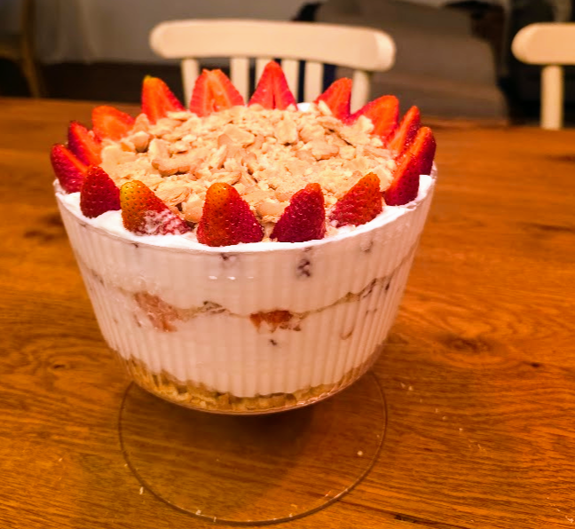

קינוח שכבות שהוא הגדרה של יופי בלי מאמץ — שכבות של ביסקוויטים פריכים, קצפת עשירה ותותים טריים שמתחברים לדבר הזה שאי אפשר להפסיק לאכול ממנו.
אפשר להכין בקערה אחת גדולה ושקופה לאפקט מרשים, או לחלק לכוסות אישיות — ככה או ככה, זה ייגמר תוך דקות.
קינוח · ללא אפייה
קינוח כפות מהמם, קראנצ'י ומרענן שלא דורש אפייה ונראה כאילו קניתם אותו בקונדיטוריה

קינוח שכבות שהוא הגדרה של יופי בלי מאמץ — שכבות של ביסקוויטים פריכים, קצפת עשירה ותותים טריים שמתחברים לדבר הזה שאי אפשר להפסיק לאכול ממנו.
אפשר להכין בקערה אחת גדולה ושקופה לאפקט מרשים, או לחלק לכוסות אישיות — ככה או ככה, זה ייגמר תוך דקות.
מכינים את התותים
חותכים חצי מכמות התותים לקוביות קטנות ושמים בקערית. את החצי השני פורסים לפרוסות דקות ויפות — אלה ישמשו לקישוט בסוף.
מכינים את הפירורים
מכניסים את הביסקוויטים לשקית סנדוויץ' ומועכים אותם בעזרת מערוך או תחתית של כוס כבדה. אל תהפכו אותם לאבקה! כדאי להשאיר חתיכות קטנות בשביל הקראנץ' בביס.
מכינים את הקצפת
בקערה גדולה, מקציפים את השמנת המתוקה יחד עם הסוכר ותמצית הוניל עד לקבלת קצפת יציבה, עשירה וחלקה.
מלאכת ההרכבה
לוקחים קערה שקופה גדולה (או כוסות אישיות) ובונים את השכבות: שכבת פירורי ביסקוויטים → חצי מהקצפת → קוביות תותים → עוד פירורי ביסקוויטים → שאר הקצפת.
הפיניש והקירור
מסדרים מלמעלה את פרוסות התותים היפות ששמרנו. אפשר לפזר עוד קצת פירורי ביסקוויטים לקישוט. מכניסים למקרר ל-30 דקות לפחות כדי שהקצפת תתייצב והטעמים יתחברו.
בכוסות אישיות זה נראה הכי יפה — אפשר להכין מראש ולהגיש ישר מהמקרר.
אפשר להחליף את הפתי בר בכל עוגייה פריכה — לוטוס, אוראו, או אפילו מרנג.
עובד מעולה גם עם פירות יער מעורבים, מנגו, או כל פרי עונתי אחר.